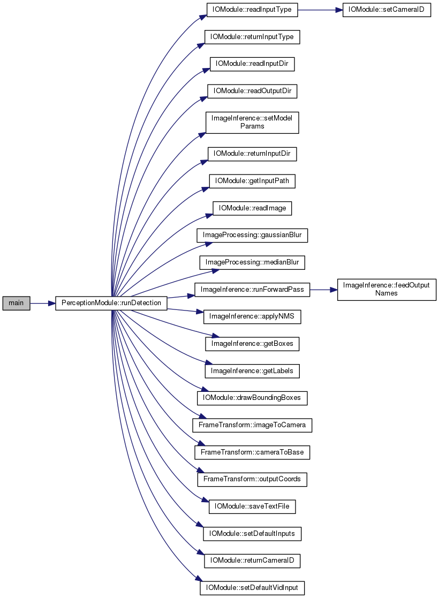

YOUR NAME's CS132 programs
Main Page
Namespaces
Classes
Files
int main
(
)
Definition at line
34
of file
main.cpp
.
References
PerceptionModule::runDetection()
.
34
{
35
PerceptionModule
detect;
36
detect.
runDetection
(
false
,
false
);
37
return
0;
38
}
PerceptionModule
Definition:
PerceptionModule.hpp:40
PerceptionModule::runDetection
int runDetection(bool testVideo, bool testImage)
runDetection is the wrapper function to run the object detection pipeline.
Definition:
PerceptionModule.cpp:39
Here is the call graph for this function:

app
main.cpp
Generated on Mon Oct 21 2019 15:37:32 for YOUR NAME's CS132 programs by
1.8.11
 Here is the call graph for this function:
Here is the call graph for this function: 1.8.11
1.8.11